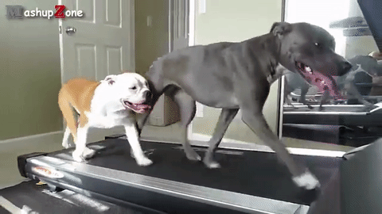
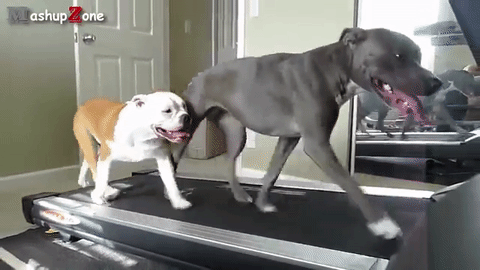

Dogs require to be just as healthy as us, so that means they need to eat healthy and stay active. Here, we will disucss hwo to make sure your dog lives a long and healthy life.
Walking: Dogs require 30-60 minutes of walking a day to make sure they stay physicly healthy. Not only do dogs need to walk, but they also enjoy it.
Playing: Playing is something everyone likes to do, so dogs deserve playing just as much as us. Without realizing it, when a dog plays they also streatch their muscles and get physicly fit. Be sure to give them water after a long playtime.
Distress: Just like humans, dogs can feel distressed. Try to keep an eye on your dog to make sure it seems to be happy. If the dog gets too distressed, it will loose motivation to play and eat. Look out for signs of distress, for it can be spotted in the ways a dog acts and looks.
Space: If your dog seems unhappy and alone, it might want some space. If you smother your dog with love, it will grow anxious. It just wants to spend a little time alone.